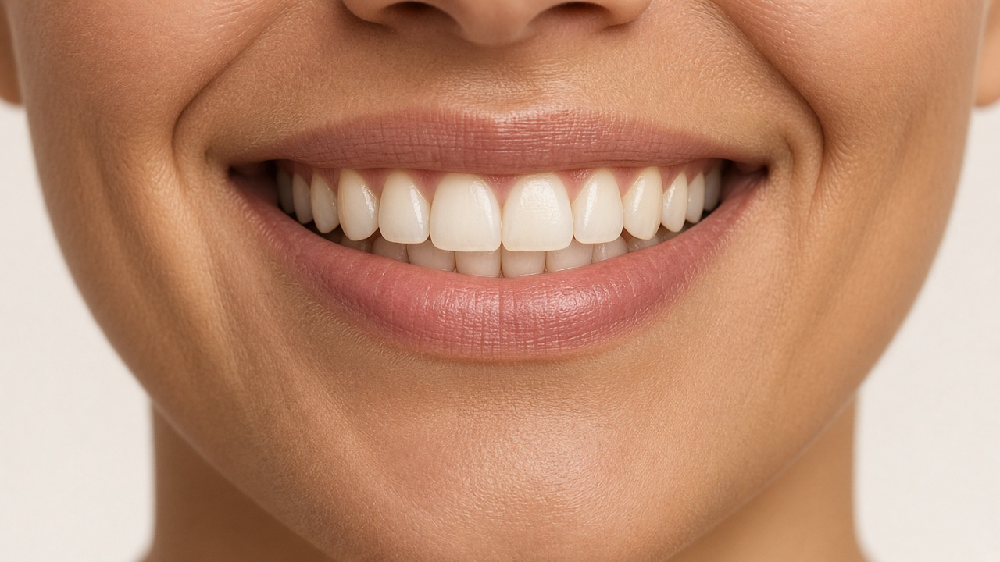
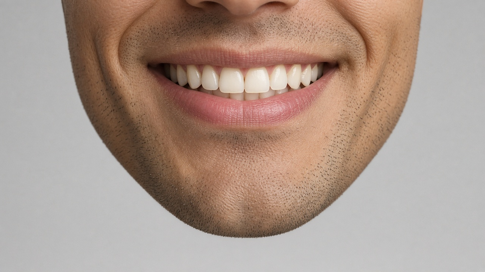
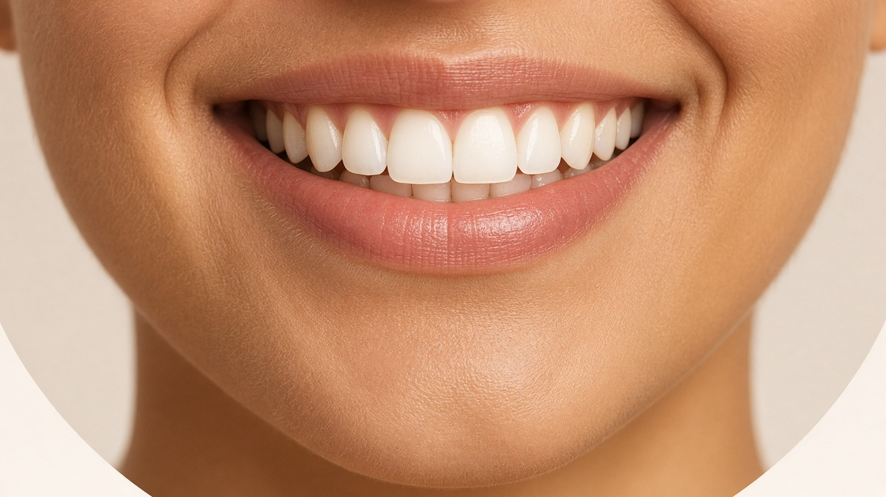
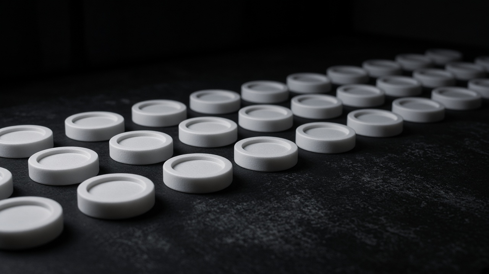
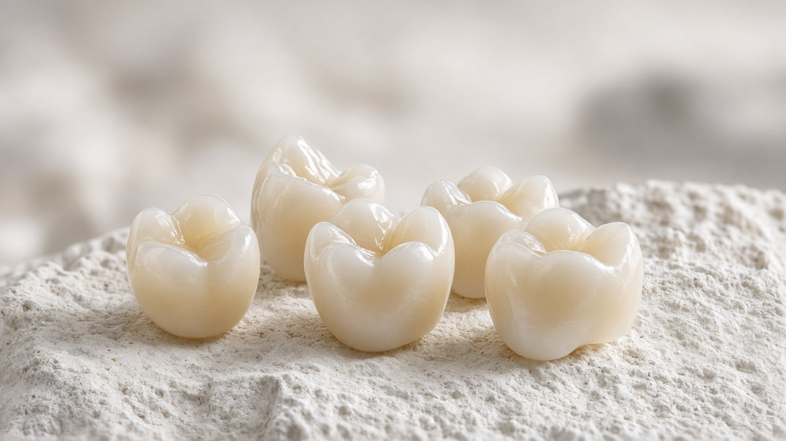

Fit
[confirm]Design is shared for approval before anything is milled. A measured pass rate is not published here.

We build AOX restorations with Melbourne clinicians — photogrammetry and case planning through to a prosthesis milled in-house on Zirkonzahn, Roland and Aidite, then finished by hand.



Trusted by Melbourne clinicians
Placeholder photos: replace with real ProTec photography.
Our work
Full-arch and restorative cases milled in-house
Turnaround, once standard times are confirmed
Major implant systems we work with
Laboratory sites in Melbourne

Services
AOX, photogrammetry and zirconia crowns and bridges — planned with you, milled in-house and finished by hand.
Screw-retained prostheses on four or more implants, designed around your plan and milled for a passive fit.
Learn morePIC and iMetric capture at your request, merged with intraoral scans for full-arch design.
Learn moreCAD/CAM-milled zirconia, then characterised and finished by hand.
Learn moreGallery
These images are placeholders, not real patient cases. Replace them once you have consented photography.




In the lab
From simple cases to extremely complex restorations, clinicians rely on our experience with AOX workflows. We adapt to the way you work and keep up with the latest innovations from the major implant companies.

Fit
[confirm]Design is shared for approval before anything is milled. A measured pass rate is not published here.
Turnaround
[confirm]Turnaround depends on the restoration and the case. Typical times are still to be confirmed.
Workflow
Digital or analogue, we fit around the workflow you already have.
Intraoral scans, photos, bite and photogrammetry data — or physical impressions if that suits the clinic.

The restoration is milled in-house on Zirkonzahn, Roland or Aidite, matched to the material.
Smile design and prosthetic design, shared for your approval before anything is milled.
Hand-finished, checked and returned. Pickup and courier details are [placeholder].
Working together
We share the design before milling, finish each restoration by hand, and talk a case through when you need us before surgery. A published turnaround figure is [confirm].
Example
“Example testimonial — replace this with a real quote from a clinician you work with, about fit, communication or turnaround.”
FAQ
Turnaround depends on the restoration and case complexity. Typical timeframes: [add standard turnaround times per restoration type]. Call us to discuss urgent cases.
We work with all major implant companies. [Optionally list the systems you use most often]
Use the case form on our Send a Case page, or send through your scanner’s lab portal. We accept common open formats such as STL, PLY and OBJ.
Yes — at your request we can facilitate PIC and iMetric cameras for implant position capture. Get in touch to arrange it.
[Describe courier / pickup service and areas covered]
Absolutely. Call 03 9886 5414 or email info@proteclab.com.au and we’ll arrange a time to talk through the plan.